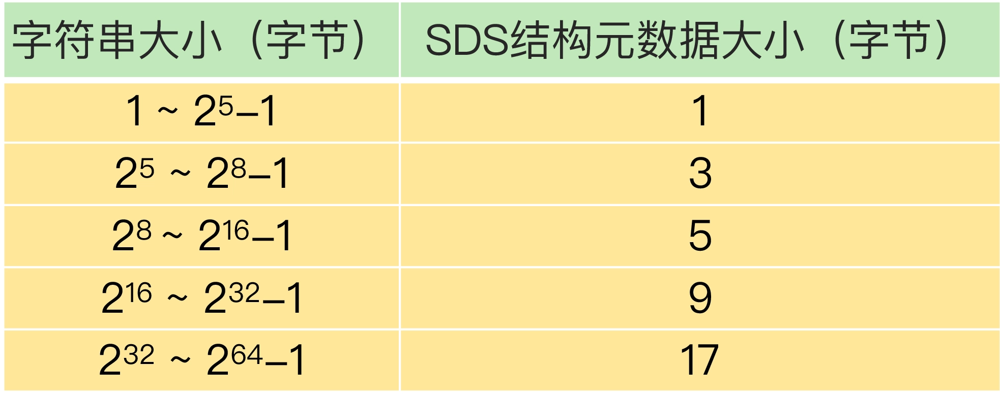

- 00 开篇词 这样学Redis，才能技高一筹.md.html
- 01 基本架构：一个键值数据库包含什么？.md.html
- 02 数据结构：快速的Redis有哪些慢操作？.md.html
- 03 高性能IO模型：为什么单线程Redis能那么快？.md.html
- 04 AOF日志：宕机了，Redis如何避免数据丢失？.md.html
- 05 内存快照：宕机后，Redis如何实现快速恢复？.md.html
- 06 数据同步：主从库如何实现数据一致？.md.html
- 07 哨兵机制：主库挂了，如何不间断服务？.md.html
- 08 哨兵集群：哨兵挂了，主从库还能切换吗？.md.html
- 09 切片集群：数据增多了，是该加内存还是加实例？.md.html
- 10 第1～9讲课后思考题答案及常见问题答疑.md.html
- 11 “万金油”的String，为什么不好用了？.md.html
- 12 有一亿个keys要统计，应该用哪种集合？.md.html
- 13 GEO是什么？还可以定义新的数据类型吗？.md.html
- 14 如何在Redis中保存时间序列数据？.md.html
- 15 消息队列的考验：Redis有哪些解决方案？.md.html
- 16 异步机制：如何避免单线程模型的阻塞？.md.html
- 17 为什么CPU结构也会影响Redis的性能？.md.html
- 18 波动的响应延迟：如何应对变慢的Redis？（上）.md.html
- 19 波动的响应延迟：如何应对变慢的Redis？（下）.md.html
- 20 删除数据后，为什么内存占用率还是很高？.md.html
- 21 缓冲区：一个可能引发“惨案”的地方.md.html
- 22 第11～21讲课后思考题答案及常见问题答疑.md.html
- 23 旁路缓存：Redis是如何工作的？.md.html
- 24 替换策略：缓存满了怎么办？.md.html
- 25 缓存异常（上）：如何解决缓存和数据库的数据不一致问题？.md.html
- 26 缓存异常（下）：如何解决缓存雪崩、击穿、穿透难题？.md.html
- 27 缓存被污染了，该怎么办？.md.html
- 28 Pika：如何基于SSD实现大容量Redis？.md.html
- 29 无锁的原子操作：Redis如何应对并发访问？.md.html
- 30 如何使用Redis实现分布式锁？.md.html
- 31 事务机制：Redis能实现ACID属性吗？.md.html
- 32 Redis主从同步与故障切换，有哪些坑？.md.html
- 33 脑裂：一次奇怪的数据丢失.md.html
- 34 第23~33讲课后思考题答案及常见问题答疑.md.html
- 35 Codis VS Redis Cluster：我该选择哪一个集群方案？.md.html
- 36 Redis支撑秒杀场景的关键技术和实践都有哪些？.md.html
- 37 数据分布优化：如何应对数据倾斜？.md.html
- 38 通信开销：限制Redis Cluster规模的关键因素.md.html
- 39 Redis 6.0的新特性：多线程、客户端缓存与安全.md.html
- 40 Redis的下一步：基于NVM内存的实践.md.html
- 41 第35～40讲课后思考题答案及常见问题答疑.md.html
- 加餐 01 经典的Redis学习资料有哪些？.md.html
- 加餐 02 用户Kaito：我是如何学习Redis的？.md.html
- 加餐 03 用户Kaito：我希望成为在压力中成长的人.md.html
- 加餐 04 Redis客户端如何与服务器端交换命令和数据？.md.html
- 加餐 05 Redis有哪些好用的运维工具？.md.html
- 加餐 06 Redis的使用规范小建议.md.html
- 加餐 07 从微博的Redis实践中，我们可以学到哪些经验？.md.html
- 结束语 从学习Redis到向Redis学习.md.html
- 捐赠
加餐 06 Redis的使用规范小建议
今天的加餐，我们来聊一个轻松点儿的话题，我来给你介绍一下 Redis 的使用规范，包括键值对使用、业务数据保存和命令使用规范。
毕竟，高性能和节省内存，是我们的两个目标，只有规范地使用 Redis，才能真正实现这两个目标。如果说之前的内容教会了你怎么用，那么今天的内容，就是帮助你用好 Redis，尽量不出错。
好了，话不多说，我们来看下键值对的使用规范。
键值对使用规范
关于键值对的使用规范，我主要想和你说两个方面：
- key 的命名规范，只有命名规范，才能提供可读性强、可维护性好的 key，方便日常管理；
- value 的设计规范，包括避免 bigkey、选择高效序列化方法和压缩方法、使用整数对象共享池、数据类型选择。
规范一：key 的命名规范
一个 Redis 实例默认可以支持 16 个数据库，我们可以把不同的业务数据分散保存到不同的数据库中。
但是，在使用不同数据库时，客户端需要使用 SELECT 命令进行数据库切换，相当于增加了一个额外的操作。
其实，我们可以通过合理命名 key，减少这个操作。具体的做法是，把业务名作为前缀，然后用冒号分隔，再加上具体的业务数据名。这样一来，我们可以通过 key 的前缀区分不同的业务数据，就不用在多个数据库间来回切换了。
我给你举个简单的小例子，看看具体怎么命名 key。
比如说，如果我们要统计网页的独立访客量，就可以用下面的代码设置 key，这就表示，这个数据对应的业务是统计 unique visitor（独立访客量），而且对应的页面编号是 1024。
uv:page:1024
这里有一个地方需要注意一下。key 本身是字符串，底层的数据结构是 SDS。SDS 结构中会包含字符串长度、分配空间大小等元数据信息。从 Redis 3.2 版本开始，当 key 字符串的长度增加时，SDS 中的元数据也会占用更多内存空间。
所以，我们在设置 key 的名称时，要注意控制 key 的长度。否则，如果 key 很长的话，就会消耗较多内存空间，而且，SDS 元数据也会额外消耗一定的内存空间。
SDS 结构中的字符串长度和元数据大小的对应关系如下表所示：

为了减少 key 占用的内存空间，我给你一个小建议：对于业务名或业务数据名，可以使用相应的英文单词的首字母表示，（比如 user 用 u 表示，message 用 m），或者是用缩写表示（例如 unique visitor 使用 uv）。
规范二：避免使用 bigkey
Redis 是使用单线程读写数据，bigkey 的读写操作会阻塞线程，降低 Redis 的处理效率。所以，在应用 Redis 时，关于 value 的设计规范，非常重要的一点就是避免 bigkey。
bigkey 通常有两种情况。
- 情况一：键值对的值大小本身就很大，例如 value 为 1MB 的 String 类型数据。为了避免 String 类型的 bigkey，在业务层，我们要尽量把 String 类型的数据大小控制在 10KB 以下。
- 情况二：键值对的值是集合类型，集合元素个数非常多，例如包含 100 万个元素的 Hash 集合类型数据。为了避免集合类型的 bigkey，我给你的设计规范建议是，尽量把集合类型的元素个数控制在 1 万以下。
当然，这些建议只是为了尽量避免 bigkey，如果业务层的 String 类型数据确实很大，我们还可以通过数据压缩来减小数据大小；如果集合类型的元素的确很多，我们可以将一个大集合拆分成多个小集合来保存。
这里，还有个地方需要注意下，Redis 的 4 种集合类型 List、Hash、Set 和 Sorted Set，在集合元素个数小于一定的阈值时，会使用内存紧凑型的底层数据结构进行保存，从而节省内存。例如，假设 Hash 集合的 hash-max-ziplist-entries 配置项是 1000，如果 Hash 集合元素个数不超过 1000，就会使用 ziplist 保存数据。
紧凑型数据结构虽然可以节省内存，但是会在一定程度上导致数据的读写性能下降。所以，如果业务应用更加需要保持高性能访问，而不是节省内存的话，在不会导致 bigkey 的前提下，你就不用刻意控制集合元素个数了。
规范三：使用高效序列化方法和压缩方法
为了节省内存，除了采用紧凑型数据结构以外，我们还可以遵循两个使用规范，分别是使用高效的序列化方法和压缩方法，这样可以减少 value 的大小。
Redis 中的字符串都是使用二进制安全的字节数组来保存的，所以，我们可以把业务数据序列化成二进制数据写入到 Redis 中。
但是，不同的序列化方法，在序列化速度和数据序列化后的占用内存空间这两个方面，效果是不一样的。比如说，protostuff 和 kryo 这两种序列化方法，就要比 Java 内置的序列化方法（java-build-in-serializer）效率更高。
此外，业务应用有时会使用字符串形式的 XML 和 JSON 格式保存数据。
这样做的好处是，这两种格式的可读性好，便于调试，不同的开发语言都支持这两种格式的解析。
缺点在于，XML 和 JSON 格式的数据占用的内存空间比较大。为了避免数据占用过大的内存空间，我建议使用压缩工具（例如 snappy 或 gzip），把数据压缩后再写入 Redis，这样就可以节省内存空间了。
规范四：使用整数对象共享池
整数是常用的数据类型，Redis 内部维护了 0 到 9999 这 1 万个整数对象，并把这些整数作为一个共享池使用。
换句话说，如果一个键值对中有 0 到 9999 范围的整数，Redis 就不会为这个键值对专门创建整数对象了，而是会复用共享池中的整数对象。
这样一来，即使大量键值对保存了 0 到 9999 范围内的整数，在 Redis 实例中，其实只保存了一份整数对象，可以节省内存空间。
基于这个特点，我建议你，在满足业务数据需求的前提下，能用整数时就尽量用整数，这样可以节省实例内存。
那什么时候不能用整数对象共享池呢？主要有两种情况。
第一种情况是，如果 Redis 中设置了 maxmemory，而且启用了 LRU 策略（allkeys-lru 或 volatile-lru 策略），那么，整数对象共享池就无法使用了。这是因为，LRU 策略需要统计每个键值对的使用时间，如果不同的键值对都共享使用一个整数对象，LRU 策略就无法进行统计了。
第二种情况是，如果集合类型数据采用 ziplist 编码，而集合元素是整数，这个时候，也不能使用共享池。因为 ziplist 使用了紧凑型内存结构，判断整数对象的共享情况效率低。
好了，到这里，我们了解了和键值对使用相关的四种规范，遵循这四种规范，最直接的好处就是可以节省内存空间。接下来，我们再来了解下，在实际保存数据时，该遵循哪些规范。
数据保存规范
规范一：使用 Redis 保存热数据
为了提供高性能访问，Redis 是把所有数据保存到内存中的。
虽然 Redis 支持使用 RDB 快照和 AOF 日志持久化保存数据，但是，这两个机制都是用来提供数据可靠性保证的，并不是用来扩充数据容量的。而且，内存成本本身就比较高，如果把业务数据都保存在 Redis 中，会带来较大的内存成本压力。
所以，一般来说，在实际应用 Redis 时，我们会更多地把它作为缓存保存热数据，这样既可以充分利用 Redis 的高性能特性，还可以把宝贵的内存资源用在服务热数据上，就是俗话说的“好钢用在刀刃上”。
规范二：不同的业务数据分实例存储
虽然我们可以使用 key 的前缀把不同业务的数据区分开，但是，如果所有业务的数据量都很大，而且访问特征也不一样，我们把这些数据保存在同一个实例上时，这些数据的操作就会相互干扰。
你可以想象这样一个场景：假如数据采集业务使用 Redis 保存数据时，以写操作为主，而用户统计业务使用 Redis 时，是以读查询为主，如果这两个业务数据混在一起保存，读写操作相互干扰，肯定会导致业务响应变慢。
那么，我建议你把不同的业务数据放到不同的 Redis 实例中。这样一来，既可以避免单实例的内存使用量过大，也可以避免不同业务的操作相互干扰。
规范三：在数据保存时，要设置过期时间
对于 Redis 来说，内存是非常宝贵的资源，而且，Redis 通常用于保存热数据。热数据一般都有使用的时效性。
所以，在数据保存时，我建议你根据业务使用数据的时长，设置数据的过期时间。不然的话，写入 Redis 的数据会一直占用内存，如果数据持续增多，就可能达到机器的内存上限，造成内存溢出，导致服务崩溃。
规范四：控制 Redis 实例的容量
Redis 单实例的内存大小都不要太大，根据我自己的经验值，建议你设置在 2~6GB 。这样一来，无论是 RDB 快照，还是主从集群进行数据同步，都能很快完成，不会阻塞正常请求的处理。
命令使用规范
最后，我们再来看下在使用 Redis 命令时要遵守什么规范。
规范一：线上禁用部分命令
Redis 是单线程处理请求操作，如果我们执行一些涉及大量操作、耗时长的命令，就会严重阻塞主线程，导致其它请求无法得到正常处理，这类命令主要有 3 种。
- KEYS，按照键值对的 key 内容进行匹配，返回符合匹配条件的键值对，该命令需要对 Redis 的全局哈希表进行全表扫描，严重阻塞 Redis 主线程；
- FLUSHALL，删除 Redis 实例上的所有数据，如果数据量很大，会严重阻塞 Redis 主线程；
- FLUSHDB，删除当前数据库中的数据，如果数据量很大，同样会阻塞 Redis 主线程。
所以，我们在线上应用 Redis 时，就需要禁用这些命令。具体的做法是，管理员用 rename-command 命令在配置文件中对这些命令进行重命名，让客户端无法使用这些命令。
当然，你还可以使用其它命令替代这 3 个命令。
- 对于 KEYS 命令来说，你可以用 SCAN 命令代替 KEYS 命令，分批返回符合条件的键值对，避免造成主线程阻塞；
- 对于 FLUSHALL、FLUSHDB 命令来说，你可以加上 ASYNC 选项，让这两个命令使用后台线程异步删除数据，可以避免阻塞主线程。
规范二：慎用 MONITOR 命令
Redis 的 MONITOR 命令在执行后，会持续输出监测到的各个命令操作，所以，我们通常会用 MONITOR 命令返回的结果，检查命令的执行情况。
但是，MONITOR 命令会把监控到的内容持续写入输出缓冲区。如果线上命令的操作很多，输出缓冲区很快就会溢出了，这就会对 Redis 性能造成影响，甚至引起服务崩溃。
所以，除非十分需要监测某些命令的执行（例如，Redis 性能突然变慢，我们想查看下客户端执行了哪些命令），你可以偶尔在短时间内使用下 MONITOR 命令，否则，我建议你不要使用 MONITOR 命令。
规范三：慎用全量操作命令
对于集合类型的数据来说，如果想要获得集合中的所有元素，一般不建议使用全量操作的命令（例如 Hash 类型的 HGETALL、Set 类型的 SMEMBERS）。这些操作会对 Hash 和 Set 类型的底层数据结构进行全量扫描，如果集合类型数据较多的话，就会阻塞 Redis 主线程。
如果想要获得集合类型的全量数据，我给你三个小建议。
- 第一个建议是，你可以使用 SSCAN、HSCAN 命令分批返回集合中的数据，减少对主线程的阻塞。
- 第二个建议是，你可以化整为零，把一个大的 Hash 集合拆分成多个小的 Hash 集合。这个操作对应到业务层，就是对业务数据进行拆分，按照时间、地域、用户 ID 等属性把一个大集合的业务数据拆分成多个小集合数据。例如，当你统计用户的访问情况时，就可以按照天的粒度，把每天的数据作为一个 Hash 集合。
- 最后一个建议是，如果集合类型保存的是业务数据的多个属性，而每次查询时，也需要返回这些属性，那么，你可以使用 String 类型，将这些属性序列化后保存，每次直接返回 String 数据就行，不用再对集合类型做全量扫描了。
小结
这节课，我围绕 Redis 应用时的高性能访问和节省内存空间这两个目标，分别在键值对使用、命令使用和数据保存三方面向你介绍了 11 个规范。
我按照强制、推荐、建议这三个类别，把这些规范分了下类，如下表所示：

我来解释一下这 3 个类别的规范。
- 强制类别的规范：这表示，如果不按照规范内容来执行，就会给 Redis 的应用带来极大的负面影响，例如性能受损。
- 推荐类别的规范：这个规范的内容能有效提升性能、节省内存空间，或者是增加开发和运维的便捷性，你可以直接应用到实践中。
- 建议类别的规范：这类规范内容和实际业务应用相关，我只是从我的经历或经验给你一个建议，你需要结合自己的业务场景参考使用。
我再多说一句，你一定要熟练掌握这些使用规范，并且真正地把它们应用到你的 Redis 使用场景中，提高 Redis 的使用效率。
每课一问
按照惯例，我给你提个小问题，你在日常应用 Redis 时，有遵循过什么好的使用规范吗？
欢迎在留言区分享一下你常用的使用规范，我们一起交流讨论。如果你觉得今天的内容对你有所帮助，也欢迎你分享给你的朋友或同事。我们下节课见。
© 2019 - 2023 Liangliang Lee. Powered by gin and hexo-theme-book.